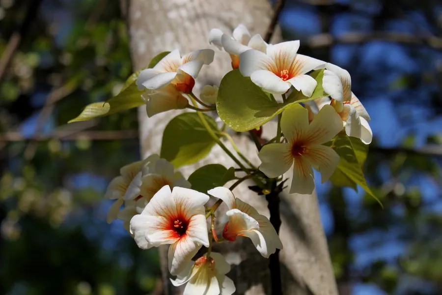

农作物与经济植物 · 植物界
油桐 Vernicia fordii

油桐是大戟科落叶乔木，种子榨出的桐油干燥快、耐水防腐，是传统油漆和防水材料的重要原料之一。
- 分类
- 门被子植物门纲双子叶植物纲目金虎尾目科大戟科属油桐属
- 栖息环境
- 亚热带山地与丘陵，喜温暖湿润
- 地理分布
- 原产中国，主产于四川、贵州、湖南、湖北等地
- 保护级别
- 暂无评估（栽培作物）
物种志
油桐是大戟科落叶乔木，株高 6–10 m，树皮灰褐色，幼枝被毛，叶片宽大，心形或卵形，常三裂，叶柄顶端有腺体。花白色，中心带红，先于叶或与叶同时开放。果实为核果，球形或卵形，外皮光滑，成熟时黄褐，内含 3–5 粒种子。
油桐原产中国，栽培历史逾千年，是重要的木本油料树种。它喜温暖湿润、光照充足，适宜在排水良好的酸性土壤生长。种子榨出的桐油干燥快、附着力强，耐水、耐腐、耐碱，传统上用于涂刷木船、家具和油纸伞，也可制油漆和油墨。桐油有毒，不可食用。中国四川、贵州、湖南等地是主产区。油桐结果有大小年现象，桐油在空气中易氧化成膜。
形态与习性
- 株高6–10 m，落叶乔木
- 叶宽大心形，常三裂
- 花白色，中心带红
- 果实球形核果
- 产品种子榨取桐油
- 用途油漆、防水与油墨
趣味知识
- 桐油干燥快、耐水防腐，是传统木船和油纸伞的涂料。
- 油桐原产中国，四川、贵州、湖南是主要产区。
- 桐油有毒，不能当作食用油使用。